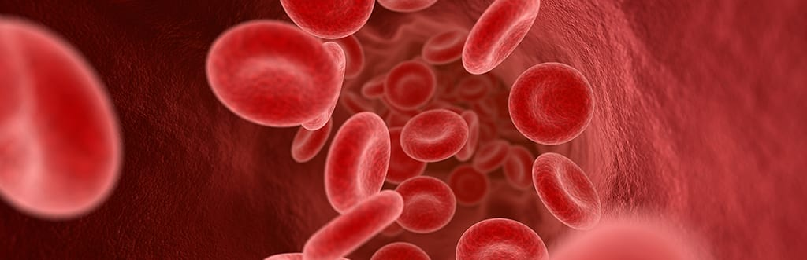

A complete blood count is used to assess the three types of cells that make up the blood: red blood cells, which transport oxygen throughout the body; white blood cells, which serve in the defense of the organism; and platelets, which play a role in blood clotting. It can be performed to confirm or rule out a diagnosis and may also complement a medical investigation involving a health issue. The test is also utilized to monitor the overall health status of a patient during medical treatments or periodically for preventive check-ups.

The complete blood count is performed by extracting a blood sample from the patient using a tube called EDTA (3 ml with a purple cap). This sample can be collected either in a laboratory or at home by a specialized professional. Once collected, the samples are sent to a laboratory where they are analyzed and processed appropriately.
To prepare for this examination:
Do not consume alcoholic beverages 72 hours before the test.
Avoid physical exercise on the day before the test.
Whole blood smear
Ordinal quantitative
Hematology
Microscope
A complete blood count can detect the cause of symptoms such as weakness, fever, and weight loss, and it is also an important tool in diagnosing viral and bacterial infections. Other diseases that can be assessed through a complete blood count include:
Anemia
Leukemia
Lymphomas
Myelomas
Polycythemia (overproduction of blood cells)